Mission Statement
Nowadays, technology is getting bigger and bigger part of our life, many people get used to it and rely on the technology is different living activities.
Agriculture is becoming more and more important in our daily life to ensure people’s food. However, urban areas are getting bigger and bigger with increasing population. It’s necessary to reduce pressure on agricultural field and encourage people to be proactive through this App, encourage them to plant different types of plants.
BioFriend Inc. is established to help people get invloved with the worldwide efforts to keep our earth green. The interactive website provides diverse features to help people develop their gardening knowledge.
Target Demographic
All people are targeted by BioFriend website.
In fact, modern technology is becoming essential part of everyone’s life, especially kids who do every daily task by technological tools.
So that, BioFriend is aiming to keep people in touch with Nature throughout this powerful tool and encourage them to become proactive.
BioFriend Inc. - Contact : (613) 999-9999 - mail : costumer.Info@BioFriend.ca
Ottawa, ON, Canada, K1N 5N6